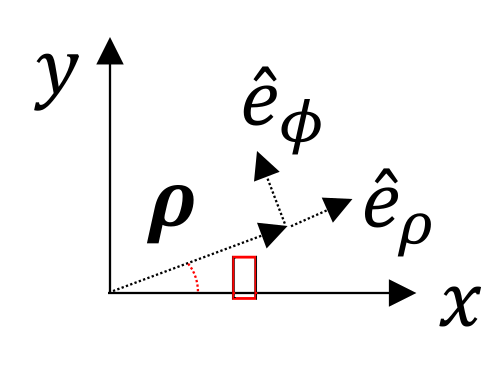

Primary causes are unknown to us; but are subject to simple and constant laws, which may be discovered by observation, the study of them being the object of natural philosophy.
With the prerequisite mathematics developed, the Helmholtz equation is now solved with remarkable ease using 2D spatial Fourier transforms. These solutions are broadly referred to as Fourier acoustics. These solutions can also be applied to the study of waves in solids.
The first two sections on pressure and velocity sources are also covered here. The treatment is basically the same, though those notes are slightly more succinctly. (Note that \(\texttt{\hat}\)s are used instead of capital letters for Fourier-transformed quantities in those notes.)
Contents:
Begin with the Helmholtz equation \begin{align}\label{Helmster}\tag{1} \Laplacian p_\omega + k^2 p_\omega = 0\,. \end{align} Given field in the source plane \(p_\omega(x,y,0)\), find \(p_\omega(x,y,z>0)\). Start by taking the 2D spatial Fourier transform of Eq. \eqref{Helmster}: \begin{align*} \FTxy \bigg\{\bigg(\frac{\partial^2}{\partial x^2} + \frac{\partial^2}{\partial y^2} + \frac{\partial^2}{\partial z^2}\bigg) p_\omega + k^2 p_\omega\bigg\} %= \frac{d^2 P}{dz^2} + (k^2-k_x^2-k_y^2) = 0\,. \end{align*} Using the derivative property and calling \(P= P(k_x,k_y,z)\), the above becomes \begin{align*} \frac{d^2 P}{dz^2} + k_z^2 P = 0\,,\quad k_z = \sqrt{k^2 - k_x^2 -k_y^2}\,. \end{align*} For forward propagation, the above 2nd order ODE reads \begin{align*} P(k_x,k_y,z) = P(k_x,k_y,0) e^{ik_zz}\,. \end{align*} To return to physical space, the inverse 2D spatial Fourier transform is taken: \begin{align*} p_\omega(x,y,z) %&= \frac{1}{4\pi^2}\iint_{-\infty}^\infty P(k_x,k_y,z) e^{i(k_xx +k_yy)} dk_x\, dk_y\\ %&= \frac{1}{4\pi^2} \iint_{-\infty}^\infty P(k_x,k_y,0) e^{i(k_xx + k_yy + k_zz)} dk_x\, dk_y\\ = \IFTxy \{P(k_x,k_y,0)e^{ik_zz}\}\,. \end{align*} Since \(P(k_x,k_y,0) = \FTxy\{p(k_x,k_y,0)\}\), the entire field can be written in terms of the source condition: \begin{align}\label{presssource}\tag{2} \boxed{p_\omega(x,y,z) = \IFTxy \{\FTxy\{p_\omega(x,y,0)\}e^{ik_zz}\}\,,} \end{align} where the \(z\) component of the wavenumber is \begin{align*} k_z &= \sqrt{k^2-k_x^2-k_y^2}\\ &=\begin{cases} \text{ positive real}\,\quad & k_x^2 + k_y^2 < k^2 \\ \text{ positive imaginary}\, \quad &k_x^2 + k_y^2 > k^2 \,. \end{cases} \end{align*} Note that the entire angular spectrum (all \(k_x,k_y\)) is required to reproduce the exact field.
For axisymmetric sources, Eq. \eqref{presssource} becomes \begin{align*} p_\omega (r,z) = \IHT \{\HT \{p_\omega(\rho,0)\} e^{ik_zz}\} \\ k_z = \sqrt{k^2 - \kappa^2}\,,\quad \kappa^2 = k_x^2 +k_y^2\,. \end{align*}
Bessel (nondiffracting) beams were "discovered" in optics in the 80s [Durnan, JOSA A, 4, 651 (1987)].
Consider the pressure source \begin{align*} p_\omega(x,y,0) = p_\omega(\rho) = p_0J_0(\alpha \rho)\,, \end{align*} where \(\alpha\) is a constant, not a direction cosine. The solution is found by taking \begin{align*} p(\rho,z) = \IHT\{\HT\{p_0(\rho)\}e^{ik_zz}\}\,, \end{align*} where \(k_z = \sqrt{k^2 - \kappa^2}\). The Hankel transform is found by looking at the delta function handout: \begin{align*} \HT\{p_0(\rho)\} &= p_0 \int_{0}^{\infty} J_0(\alpha\rho)J_0(\kappa\rho) \rho\,d\rho\\ &= \frac{p_0}{\alpha} \delta(\kappa-\alpha)\,. \end{align*} Thus the pressure field is \begin{align*} p_0(\rho,z) &= \frac{p_0}{\alpha} \int_{0}^{\infty} \delta(\kappa-\alpha) e^{i(k^2-\kappa^2)^{1/2}} J_0(\kappa \rho) \kappa\, d\kappa \\ &= p_0 J_0(\alpha \rho) e^{i(k^2 - \alpha^2)^{1/2}z} \\ & \propto J_0(\alpha\rho) \text{ for all } z\,, \end{align*} i.e., there is no diffraction in the field. Note that the beam propagates if \(\alpha\) is less than \(k\). The phase speed is \begin{align*} c_\text{ph} = \frac{\omega}{k_z} = \frac{\omega}{\sqrt{k^2-\alpha^2}} = \frac{c_0}{\sqrt{1 - (\alpha/k)^2}}\,. \end{align*} The glaring issue with the realization of such a non-diffracting beam is that \begin{align*} J_0(\alpha\rho) \propto \frac{1}{\sqrt{\rho}}\,,\quad \alpha\rho \gg 1\,, \end{align*} so the source power is \begin{align*} W = \oint \vec{I} \cdot d\vec{S} = \frac{p_0^2}{2\rho_0c_0}\int_{0}^{\infty} J_0^2(\alpha\rho) \pi \rho \,d\rho \to \infty\,. \end{align*} That is to say, an infinite amount of energy is required to generate such a beam! For practical (local) realization of a Bessel beam, the source needs to be truncated before \(a\) and \(0\) outside, i.e., \begin{align*} p_0(\rho) = p_0\, J_0(\alpha \rho)\,,\quad \rho \leq a\,. \end{align*}
For a velocity source (which is more practical), we should recall the linearized Newton's law: \begin{align*} \rho_0 \frac{\partial \vec{u}}{\partial t} + \grad p = 0\,, \end{align*} or for time-harmonic waves, \(-i\omega\rho_0 \vec{u}_\omega + \grad p_\omega = 0\). Solving for \(\vec{u}\) gives \begin{equation*} \vec{u}_\omega = \frac{\grad p_\omega}{ik\rho_0c_0}\,. \end{equation*} The 2D spatial Fourier transform of the left-hand side of the above is simply \begin{align*} \FTxy \{\vec{u}_\omega (x,y,z)\} = \vec{U}(k_x,k_y,z). \end{align*} Meanwhile, for the right-hand side, note that by the derivative property of the Fourier transform, \begin{align*} \FTxy\{\grad p_\omega(x,y,z)\} &= \FTxy\bigg\{\bigg(\ex \frac{\partial}{\partial x} + \ey \frac{\partial}{\partial y} + \ez \frac{\partial }{\partial z}\bigg)p_\omega\bigg\}\\ &= i(k_x \ex + k_y \ey)P(k_x,k_y,z) +\ez \FTxy\bigg\{\frac{\partial p_\omega}{\partial z}\bigg\}\,. \end{align*} But since \(P(k_x,k_y,z) = P(k_x,k_y,0) e^{ik_zz}\), the last term of the above, \(\ez \FTxy\{\partial p_\omega/\partial z\}\), is \begin{align*} \ez \FTxy\bigg\{\frac{\partial p_\omega}{\partial z} \bigg\} &= \ez \FTxy \bigg\{\frac{\partial}{\partial z}\IFTxy [P(k_x,k_y,0) e^{ik_zz}] \bigg\}\\ &=\ez \FTxy \{\IFTxy ik_z [P(k_x,k_y,0) e^{ik_zz}] \}\\ &=\ez ik_z P(k_x,k_y,0) e^{ik_zz}\\ &=\ez ik_z P(k_x,k_y,z)\,. \end{align*} So \begin{align*} \FTxy\{ \grad p_\omega(x,y,z)\} &= i(k_x \ex + k_y \ey)P(k_x,k_y,z) + \ez ik_z P(k_x,k_y,z) \\ &=i\vec{k} P(k_x,k_y,z)\,, \end{align*} where \begin{align*} \vec{k} &= k_x\ex + k_y\ey + (k^2 - k_x^2 - k_y^2)^{1/2}\ez = \vec{k} (k_x,k_y)\,. \end{align*} Since \(\vec{u}_\omega = \frac{\grad p_\omega}{ik\rho_0c_0}\), its 2D spatial Fourier transform is \begin{align}\label{U}\tag{3} \vec{U}(k_x,k_y,z) &= \frac{1}{\rho_0c_0} \frac{\vec{k}}{k} P(k_x,k_y,z)\,. \end{align} Assuming that \(\vec{u}_\omega (x,y,0) = u_0(x,y)\ez\), Eq. \eqref{U} evaluated in the source plane \(z=0\) is \begin{align*} \vec{U}_0(k_x,k_y) &= \FTxy \{u_0(x,y)\} \ez = U_0 (k_x,k_y)\ez\\ &= \frac{1}{\rho_0c_0} \frac{k_z \ez}{k} P_0(k_x,k_y) \end{align*} Solving for the 2D spatial Fourier transform of the source pressure gives \[P_0(k_x,k_y) = \rho_0 c_0 \frac{k}{k_z} U(k_x,k_y)\,.\] Since \(p_\omega(x,y,z) = \IFTxy \{P_0(k_x,k_y)e^{ik_zz}\}\), the full field due to a velocity source is \begin{align*} \boxed{p_\omega (x,y,z) = \rho_0c_0\IFTxy \{U_0(k_x,k_y)\frac{k}{k_z} e^{-ikz}\}\,,} \end{align*} where \(P_0(k_x,k_y) = \FTxy\{p_0(x,y)\}\). Note that there is a singularity at \(k_z = 0\), corresponding to the perimeter of the radiation circle.
The whole code is nondimensionalized. The \(z\) axis is nondimensionalized by \(z_0\), the Rayleigh distance, sometimes called the "collumnation distance" or "diffraction length" \(ka^2/2 \sim S/\lambda\) (surface area to wavelength). The transverse axis is nondimensionalized by the source radius \(a\) (\(R = r/a\)), as is the wavenumber (\(K = ka\)). The code is set up to handle a velocity source, but it can easily be modified to handle pressure sources by implementing the discussion above.
The code itself contains all of these definitions. This sheet contains a full explanation and discussion of the code.
The bending wave has the form \begin{align*} \vec{u}(x,y,0,t) &= u_0 e^{i(k_bx-\omega t)} \ez\, \quad k_b = \omega/c_b\\ &= u_0(x) e^{-i\omega t} \end{align*} where the normal particle velocity on the surface is \begin{align*} u_0(x) = u_0 e^{ik_b}\,. \end{align*}
To calculate the field in the fluid medium, first take the 2D spatial Fourier transform of the source condition, \begin{align*} U_0(k_x,k_y) &= \FTxy\{u_0(x)\} \\ &= u_0 \iint_{-\infty}^\infty e^{-i(k_x-k_b)x -ik_yy} dx\, dy\\ &= 4\pi^2 u_0 \delta(k_x-k_b)\delta(k_y)\,. \end{align*} Now convert to a pressure source using the result from the section on velocity sources. \begin{align*} P(k_x,k_y) &= \rho_0c_0 \frac{k}{k_z} U_0(k_x,k_y)\\ &= 4\pi^2 \rho_0c_0 u_0 \frac{k}{k_z} \delta(k_x-k_b)\delta(k_y)\,. \end{align*} The pressure field is found by the standard Fourier acoustics procedure: \begin{align*} p_\omega(x,y,z) &= \IFTxy \{P_0(k_x,k_y) e^{ik_zz}\}\\ &= 4\pi^2 \rho_0c_0 u_0 k \, \IFTxy \{\delta(k_x-k_b) \delta(k_y) {e^{ik_zz}}/{k_z}\}\\ &= \rho_0c_0 u_0 k \iint_{-\infty}^\infty \delta(k_x-k_b)\delta(k_y) \frac{e^{i(k^2-k_x^2 -k_y^2)^{1/2}}}{\sqrt{k^2-k_x^2-k_y^2}} e^{ik_xx + ik_yy} dk_xdk_y\\ &= \frac{\rho_0c_0 u_0 k}{\sqrt{k^2-k_b^2}} e^{ik_bx + i(k^2-k_b^2)^{1/2}z}\,. \end{align*} If \(k > k_b\) (or \(c_b > c_0\)), then the wave propagates into the fluid, while if \(k < k_b\) (or \(c_b < c_0\)), then the wave is evanescent in the fluid.
For additional insight, convert pressure to the particle velocity: \begin{align*} \vec{u}_\omega (x,y,z) &= \grad p_\omega/ik\rho_0c_0\\ &= u_0 \frac{k_b\ex }{\sqrt{k^2-k_b^2}} e^{ik_bx + i\sqrt{k^2 - k_b^2}z}\,. \end{align*} The intensity can then be calculated: \begin{align*} \vec{I} &= \frac{1}{2}\Re \{p_\omega \vec{u}_\omega^*\}\\ &= \frac{\rho_0c_0u_0^2}{2(1-k_b^2/k^2)} \bigg[\frac{k_b}{k} \ex + \sqrt{1-k_b^2/k^2}\ez\bigg]\,\quad k_b \,{<}\, k\\ &= \frac{\rho_0c_0u_0^2}{2(1-k_b^2/k^2)} \frac{k}{k_b} e^{-2(k_b^2 - k^2)^{1/2}z} \quad k_b>k\,. \end{align*} In the second case, there is no power radiated in the \(z\) direction.
As a sanity check, what if \(c_b \to \infty\)? Then one should obtain a plane wave in the \(z\) direction. Indeed, for \(k_b\to 0\), \begin{align*} p_\omega(x,y,z) &= \rho_0c_0 u_0 e^{ikz}\,. \end{align*}

Then \begin{align*} \xi_x &= -\xi_\phi(\rho) \sin\phi\\ \xi_y &= \xi_\phi(\rho) \cos\phi\\ \xi_z &= 0 \end{align*} and \begin{align*} \divergence \vec{\xi}_t &= \frac{1}{\rho} \frac{\partial (\rho \xi_\rho)}{\partial \rho} + \frac{1}{\rho} \frac{\partial \xi_\phi}{\partial \phi} + \frac{\partial \xi_z}{\partial z} \end{align*} Since \(\vec{\xi}_t(\rho,\phi,z=0) = \xi_\phi (\rho) \hat{e}_\phi\), the above equation reduces to \(\divergence \vec\psi = 0\). Meanwhile, the Laplacian in cylindrical coordinates is \begin{align*} \Laplacian &= \frac{\partial^2}{\partial \rho^2} + \frac{1}{\rho} \frac{\partial}{\partial \rho} + \frac{1}{\rho^2}\frac{\partial^2}{\partial \phi^2} + \frac{\partial^2}{\partial z^2}\,. \end{align*} Thus the Laplacian of the wave variable in Eqs. \eqref{Helmers1} and \eqref{Helmers2} read \begin{align*} \Laplacian \xi_x &= \bigg( \frac{\partial^2}{\partial \rho^2} + \frac{1}{\rho} \frac{\partial}{\partial \rho} + \frac{1}{\rho^2}\frac{\partial^2}{\partial \phi^2} + \frac{\partial^2}{\partial z^2} \bigg) (-\xi_\phi \sin\phi)\\ \Laplacian \xi_y &= \bigg( \frac{\partial^2}{\partial \rho^2} + \frac{1}{\rho} \frac{\partial}{\partial \rho} + \frac{1}{\rho^2}\frac{\partial^2}{\partial \phi^2} + \frac{\partial^2}{\partial z^2} \bigg) (\xi_\phi \cos\phi)\,, \end{align*} and both Eqs. \eqref{Helmers1} and \eqref{Helmers2} yield \begin{align*} \bigg( \frac{\partial^2}{\partial \rho^2} + \frac{1}{\rho} \frac{\partial}{\partial \rho} + \frac{1}{\rho^2}\frac{\partial^2}{\partial \phi^2} \bigg) (\xi_\phi \cos\phi) \end{align*} \begin{align}\label{Hankster}\tag{5} \bigg(\frac{\partial^2}{\partial \rho^2} + \frac{1}{\rho} \frac{\partial}{\partial \rho} - \frac{1}{\rho^2}\bigg) \xi_\phi + \frac{\partial^2\xi_\phi}{\partial z^2} + k^2_t \xi_\phi \end{align} The above equation is now solved using Hankel transforms. Define the \(n\)th order Hankel transform pair: \begin{align*} F_H^{n}(\kappa) &= \HT^n \{f(\rho)\} = \int_{0}^{\infty} f(\rho) J_n (\kappa \rho )\rho d\rho\\ f(\rho) &= \IHT_n \{F_H^{n}(\kappa)\} = \int_{0}^{\infty} F_H^{(n)}(\kappa) J_n (\kappa \rho )\kappa d\kappa\,. \end{align*} Because of the identity \begin{align*} \int_{0}^{\infty} J_n(\kappa\rho) J_n(\kappa\rho')\kappa d\kappa = \frac{\delta(\rho-\rho')}{\rho} \end{align*} and \begin{align*} \IHT_n\bigg\{\bigg(\frac{\partial^2}{\partial\rho^2} + \frac{1}{\rho}\frac{\partial}{\partial\rho} - \frac{n^2}{\rho^2}\bigg)f(\rho) \bigg\} = -k^2 {F_H}^n(\kappa) \end{align*} So Eq. \eqref{Hankster} becomes \begin{align*} \frac{d^2 \hat{\xi}_\phi}{dz^2} + (k_t^2 - \kappa^2) \hat{\xi}_\phi = 0 \end{align*} Thus the solution for the torsional wave field is \begin{align*} \xi_\phi (\rho,z) = \IHT_1\{\HT_1 [\xi_\phi(\rho,0)] e^{ik_zz}\} \end{align*}Consider two planes, \(z_1 = \) constant and \(z_2\) = constant, where \(z_2 > z_1\). The purpose of nearfield acoustical holography (NAH) is to calculate the field near the source given the field far away. NAH can be used to investigate structural integrity of a vehicle, for example.
Given \(p_\omega (x,y,z_1)\), then the field at \(z_2\) is \begin{align}\tag{1}\label{1holo} p_\omega(x,y,z_2) = \IFTxy\{\FTxy{p_\omega(x,y,z_1)} e^{ik_z(z_2-z_1)}\}\,, \end{align} where the projection of the wavenumber in the \(z\) direction is, for propagating and evanescent waves, respectively, \begin{align} k_z &= \sqrt{k^2 - k_x^2 -k_y^2}\,,\quad k_x^2 + k_y^2 \leq k^2 \tag{2a}\label{2aholo}\\ &= i\sqrt{k_x^2 + k_y^2- k^2}\,,\quad k_x^2 + k_y^2 > k^2 \tag{2b}\label{2bholo} \end{align} Eq. \eqref{1holo} is inverted to calculate the pressure field in the plane \(z_1 =\) constant: \begin{align}\label{3holo}\tag{3} p_\omega(x,y,z_1) &= \IFTxy\{\FTxy[p_\omega(x,y,z_2)] e^{-ik_z(z_2-z_1)}\}\,, \end{align} Thus as \(z_2-z_1\) increases (\(z_1\) moved farther to the left with \(z_2\) fixed), the evanescent waves grow. Thus Eq. \eqref{3holo} is not a physical solution to the wave equation. Normally, \(z_2\) and \(z_1\) are defined as \begin{alignat*}{2} z_2 &= z_H &&= \text{ hologram plane}\\ z_1 &= z_I &&= \text{ image plane} \,, \end{alignat*} and the \(z\) component of \(\vec{u}\) is normally desired at \(z= z_I\). Let the normal component of the particle velocity in the image plane be \begin{align*} u_0(x,y,z_I) = \vec{u}(x,y,z_I) \cdot \ez\,. \end{align*} Then the Fourier transform of the normal velocity field in the image plane is \begin{align*} U_0 (k_x,k_y,z_I) &= \frac{1}{\rho_0c_0}\frac{k_z}{k} P_0(k_x,k_y,z_I)\,. \end{align*} Eq. \eqref{3holo} can thus converted to give the partical velocity in the image plane, \(z_1 = \) constant: \begin{align*} u_0 (x,y,z_I) &= \IFTxy\{\FTxy [p_\omega(x,y,z_H)] G_H(k_x,k_y,z_H-z_I)\}\,, \end{align*} where the propagator above is \begin{align*} G_H(k_x,k_y,z_H-z_I) &= \frac{1}{\rho_0c_0}\frac{k_z}{k} \begin{cases} e^{-i(k^2 -k_x^2 -k_y^2)^{1/2} (z_H - z_I)} \,, \quad k_x^2 +k_y^2 \leq k^2\\ e^{(k_x^2 + k_y^2 - k^2)^{1/2}(z_H - z_I)} \,, \quad k_x^2 +k_y^2 > k^2 \end{cases} \end{align*}
The engineering challenge is to have \(|z_H- z_I| \lesssim \lambda \) to measure the evanescent waves, without which resolution is limited to \(\sim \lambda\), because of the restriction that \(k_x^2 + k_y^2 \leq k^2\) for propagating waves, or \begin{align*} \frac{1}{\lambda_{x,y}} \leq \frac{1}{\lambda^2} \implies \lambda_{x,y}^2 \geq \lambda^2\,. \end{align*} Thus \(\lambda\) is the minimum resolvable spatial scale if only propagating waves are measured in the hologram plane \(z_H =\) constant.